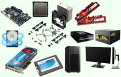

Компьютеры
Компью́тер (англ. computer, МФА: [kəmˈpjuː.tə(ɹ)][1] — «вычислитель») — устройство или система, способная выполнять заданную, чётко определённую, изменяемую последовательность операций. Это чаще всего операции численных расчётов и манипулирования данными, однако сюда относятся и операции ввода-вывода. Описание последовательности операций называется программой...читать далее
Телефоны
Телефо́н (от др.-греч. τῆλε «далеко» + φωνή «голос», «звук») — аппарат для передачи и приёма звука (в основном — человеческой речи) на расстоянии. Современные телефоны осуществляют передачу посредством электрических сигналов...Читать далее
Игровые консоли
Игрова́я приста́вка (игровая консоль) — специализированное электронное устройство, предназначенное для видеоигр. Для таких устройств, в отличие от персональных компьютеров, запуск и воспроизведение видеоигр является основной задачей. Домашние игровые приставки используют телевизор, проектор или компьютерный монитор в качестве независимого устройства отображения. Портативные (карманные)...читать далее
Железо

Желе́зо (Fe от лат. Ferrum) — элемент восьмой группы (по старой классификации — побочной подгруппы восьмой группы) четвёртого периода периодической системы химических элементов Д. И. Менделеева с атомным номером 26. Один из самых распространённых в земной коре металлов: второе место после алюминия...читать далее